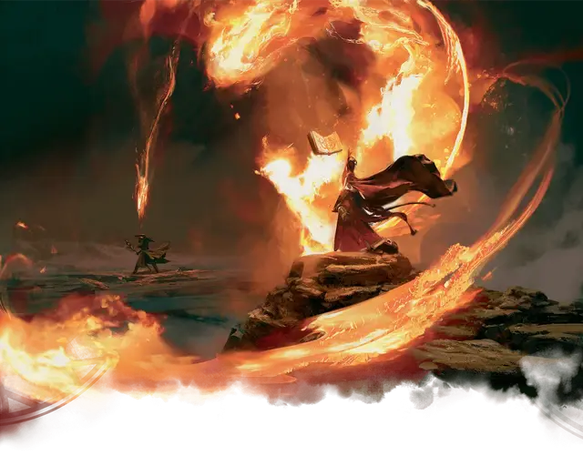

Студент Призмари
Prismari Student

Вы художник, и вы готовились отточить свое мастерство в соответствии с традициями факультета Призмари. Какой бы ни была ваша область — скульптура, танец, рисование, музыка, драма, архитектура или любая другая область — у вас есть грандиозное видение воплощения вашего искусства в жизнь в сплаве магии и творчества.
Владение навыками: Акробатика, Выступление.
Владение инструментами: Один вид музыкального инструмента или один вид ремесленных инструментов.
Языки: Один на ваш выбор
Снаряжение: Бутыль чёрных чернил, писчее перо, набор ремесленных инструментов или музыкальный инструмент (на ваш выбор), школьная униформа и поясной кошель с 10 зм
УМЕНИЕ: Поступивший в Призмари
Вы получаете черту «Поступивший в Стриксхейвен» и обязаны выбрать для неё факультет Призмари.
Кроме того, если вы владеете умением «Использование заклинаний» или «Магия договора», то заклинания из таблицы «Заклинания Призмари» добавляются в список заклинаний вашего класса заклинателя (Если вы мультиклассовый персонаж с несколькими списками заклинаний, то эти заклинания добавляются в каждый из них).
Заклинания Призмари
Подумайте о том, чтобы настроить внешний вид ваших заклинаний, когда вы их разыгрываете. Ваши заклинания Призмари могут быть наполнены динамикой и безостановочным движением - при использовании танца как соматического компонента. Даже взрыв в ваших руках - произведение искусства; стихийные силы могут складываться великолепные узоры когда вы бросаетесь заклинаниями. Эти силы могут остаться на вашем теле или в вашей одежде в качестве декоративных элементов после того, как ваши заклинания рассеются, поскольку искры танцуют в ваших волосах, а ваше прикосновение оставляет следы инея на всем, к чему вы прикасаетесь
Создание персонажа призмари
Любой класс или подкласс, владеющий стихийными силами холода, огня, молнии и ветра, может хорошо вписаться в Призмари. Друиды и чародеи типичны для Призмари, а также в нём широко представлены волшебники, изучающие Школы Воплощения или Преобразования.
Жрецы не очень распространены в этой школе, но некоторые представители домена Бури попадают сюда.
Помимо традиционных заклинателей, в число учеников Призмари входят также монахи, которые следуют Пути четырех стихий. Некоторые акробатичные плуты и воины (включая тех, кто равняется на архетип Мистического рыцаря) также восхищаются атлетизмом исполнения Призмари.
Варианты персонализации. Хотя учебная программа факультета Призмари привлекает многих общительных и энергичных художников, в школе нет недостатка в застенчивых ученых и апатичных хвастунах среди своих рядов. Таблица Черты характера Призмари предлагает множество черт, которые вы могли бы применить для своего персонажа.
Черты характера Призмари
| к6 | Черта характера |
| 1 | Я душа вечеринки, и я ожидаю всеобщего внимания, когда вхожу в комнату. |
| 2 | Две недели назад я был в восторге от своего последнего проекта. Теперь я думаю, что он мусор и заслуживает уничтожения. |
| 3 | Я верю, что у каждого есть возможность выразить свое истинное «я» через искусство, и я счастлив тихонько подтолкнуть их в правильном направлении. |
| 4 | Все являются критиками, и я работаю над тем, чтобы завоевать их расположение. |
| 5 | Меня одолевает такое непреодолимое чувство тоски по поводу моего искусства. Ничто больше не привлекает моего внимания. |
| 6 | Вместо того, чтобы противостоять своим негативным эмоциям, я направляю их во взрывные художественные проявления. |
Безделушки Призмари. Когда вы создадите своего персонажа, вы можете один раз совершить бросок по таблице Безделушки Призмари, вместо броска по таблице Безделушки из Книги игрока, для своей стартовой безделушки.
Безделушки Призмари
| к6 | Безделушка |
| 1 | Пара розовых очков в блестящей оправе |
| 2 | Закупоренная стеклянная бутылка, при открытии которой звучит духовая оркестровая пьеса |
| 3 | Четверка парящих водяных пылинок во флаконе |
| 4 | Патронташ акварельных красок |
| 5 | Тиара, увенчанная кристаллом, который потрескивает безвредной молнией |
| 6 | Радужное перо |